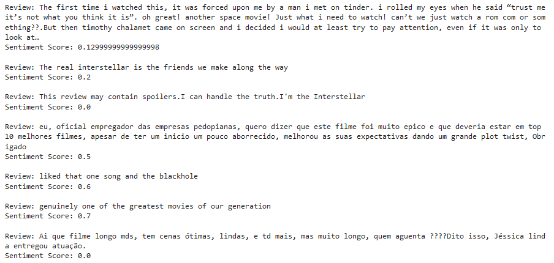
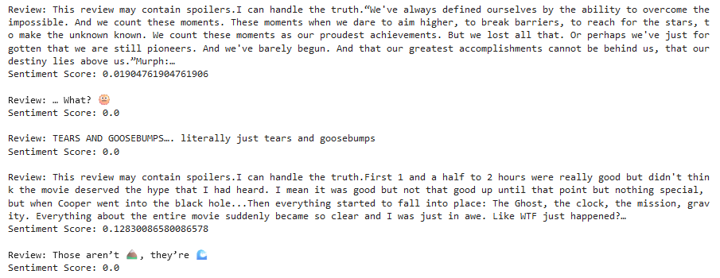
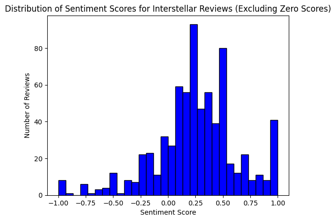
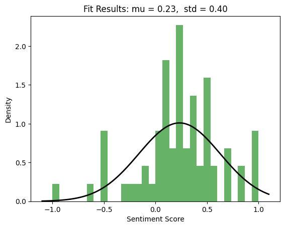
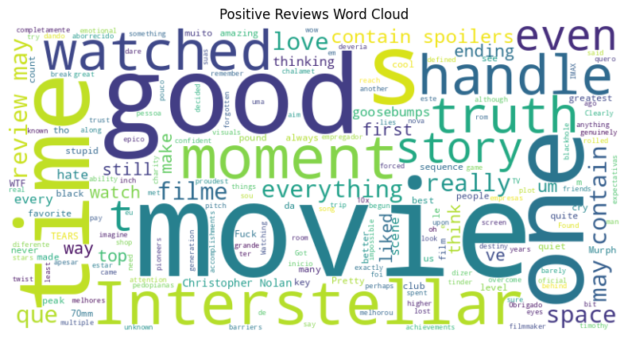
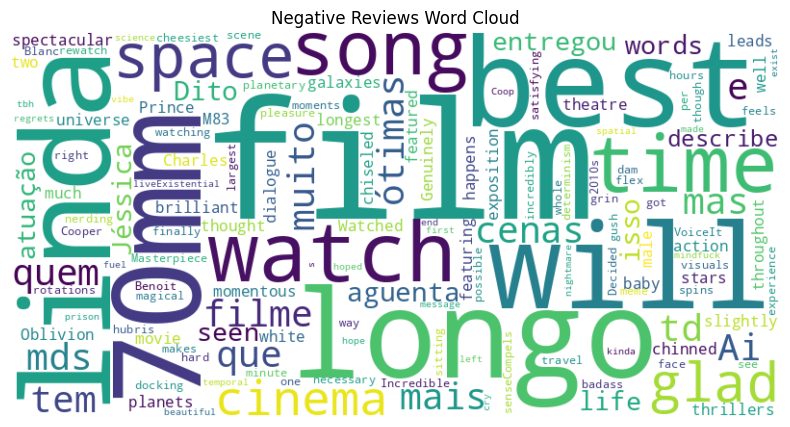

This project undertakes a sentiment analysis to compare the audience’s emotional responses towards movie directors. An analysis of movie reviews made by users at Letterboxd is carried out, aiming to explore how the sentiments differ for directors in different genres and levels of popularity.
We start by scraping data from Letterboxd using BeautifulSoup. We collect 100 pages of reviews of a given movie and use the SentimentIntensityAnalyzer module from NLTK to evaluate the sentiment score. This analysis yields a composite metric that categorizes the reviews into positive, negative, or neutral sentiments.
 By aggregating these scores, we can gauge the overall audience reception of the film and potentially correlate these sentiments with factors like box office performance or critical acclaim. Excluding the zero scores, we obtain a distribution which resembles a gaussian wit a mean of 0.2 and standard deviation of 0.4 for Interstellar for example.
 We can analyze the scores further by plotting the wordclouds corresponding to positive and negative scores. The wordcloud displays the most frequently occurring words within each sentiment category, with the size of each word indicative of its prevalence in the reviews. This visualization allows us to quickly identify key themes and descriptors that audiences associate with their viewing experience, offering a qualitative measure of the movie's impact. Such insights can inform future film projects and marketing strategies by highlighting what resonates well or poorly with viewers.
 Although a number of words repeat in both positive and negative reviews, necessitating further filtering, it's possible to distinguish certain words predominantly associated with positive reviews such as "love," "Chalamet," and "confident." Conversely, words like "hours," "oblivion," and "regrets" tend to feature more in negative reviews. This differentiation offers a nuanced understanding of audience sentiment, shedding light on the specific aspects of the film that elicit joy or sadness.